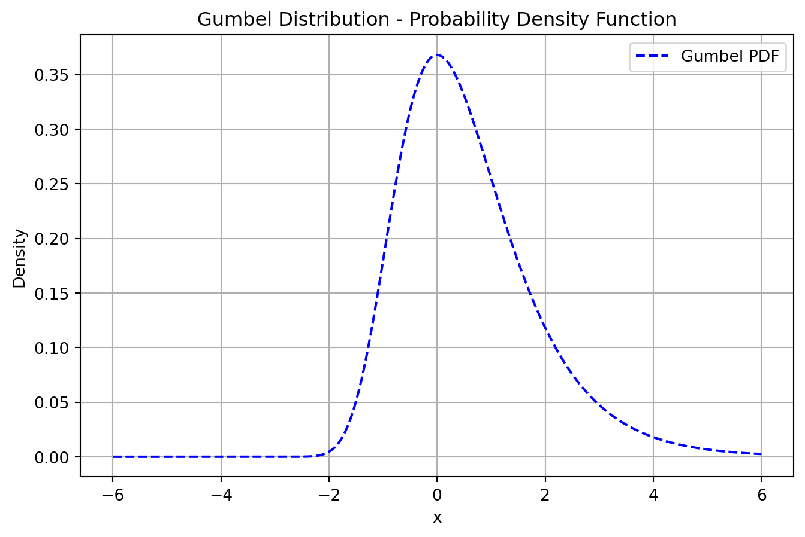
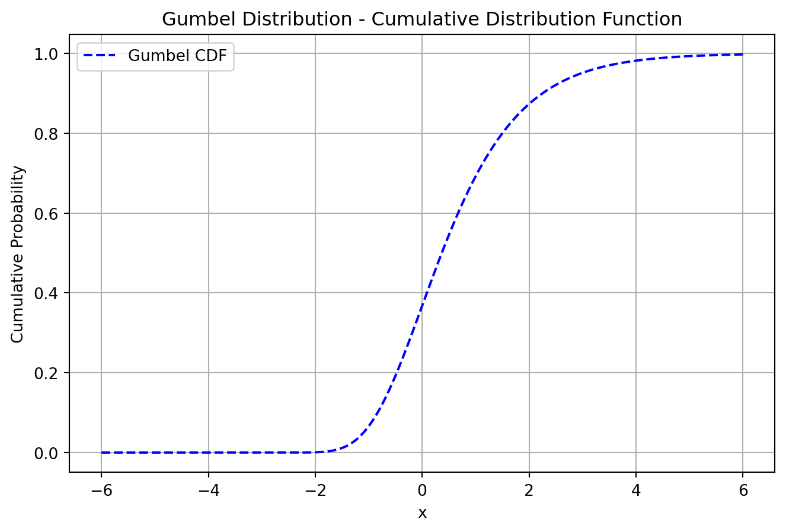
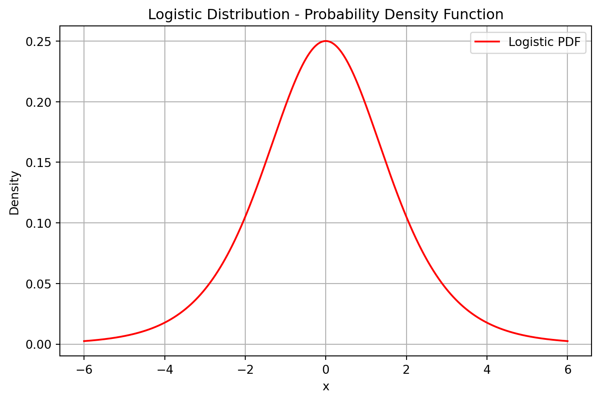
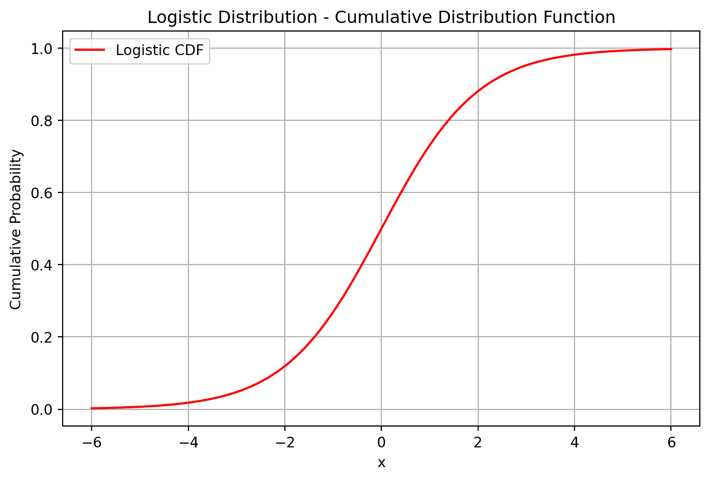
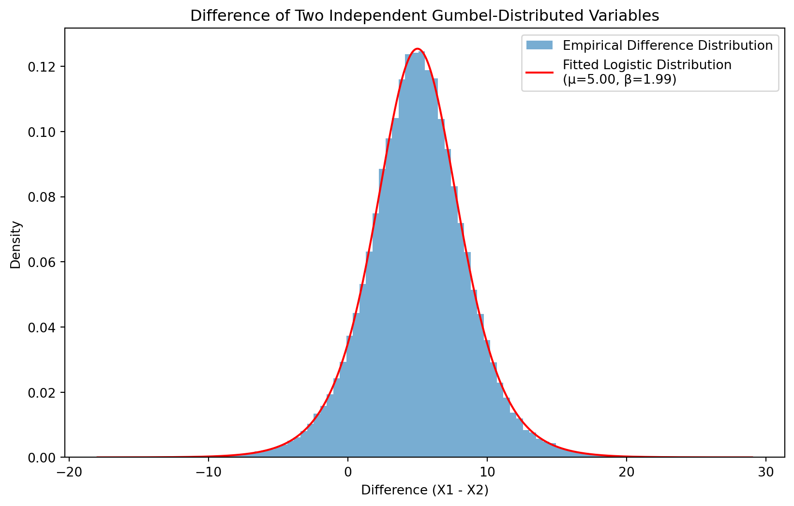

Gumbel and Logistic Distributions: Exploring Extremes
statistics
probability
python
Introduction
Probability distributions help us model real-world phenomena, from predicting extreme weather events to binary classification problems in machine learning. Two closely related but distinct distributions—the Gumbel distribution and the Logistic distribution—have interesting properties that make them useful in different scenarios.
Overview
This post will:
- Explain the Gumbel and Logistic distributions
- Discuss their real-world applications
- Explore their mathematical connection
- Introduce generalized forms of these distributions based on recent research
- Visualize the distributions using Python
The Gumbel Distribution
The Gumbel distribution is an Extreme Value Distribution that models the probability of extreme values occurring in a dataset. It is particularly useful for predicting extreme events such as floods, heatwaves, and stock market crashes.
Probability Density Function (PDF)
The Gumbel distribution is defined by the probability density function:
where: - ( ) (location parameter) determines where the peak of the distribution occurs. - ( ) (scale parameter) controls the spread of the distribution.
Cumulative Distribution Function (CDF)
The cumulative distribution function (CDF) of a Gumbel-distributed variable is:
\[
F(x) = e^{-e^{-(x-\mu)/\beta}}
\]
which describes the probability that ( X ) takes on a value less than or equal to ( x ).
# Define parametersmu, beta =0, 1# Gumbel distribution parameters# Generate x valuesx = np.linspace(-6, 6, 1000)# Compute PDFs and CDFsgumbel_pdf = gumbel_r.pdf(x, loc=mu, scale=beta)gumbel_cdf = gumbel_r.cdf(x, loc=mu, scale=beta)# Plot Gumbel PDFplt.figure(figsize=(8, 5))plt.plot(x, gumbel_pdf, label="Gumbel PDF", linestyle="dashed", color="blue")plt.title("Gumbel Distribution - Probability Density Function")plt.xlabel("x")plt.ylabel("Density")plt.legend()plt.grid()plt.show()# Plot Gumbel CDFplt.figure(figsize=(8, 5))plt.plot(x, gumbel_cdf, label="Gumbel CDF", linestyle="dashed", color="blue")plt.title("Gumbel Distribution - Cumulative Distribution Function")plt.xlabel("x")plt.ylabel("Cumulative Probability")plt.legend()plt.grid()plt.show()


Understanding and in the Gumbel Distribution
shifts the distribution left or right.
controls how spread out or concentrated the distribution is.
The mode (most probable value) is exactly at .
The mean is given by:
\[
E[X] = \mu + \beta \gamma
\]
where ( ) is the Euler-Mascheroni constant.
To estimate these parameters from data: - ( ) is estimated as ( {x} - ). - ( ) is estimated using the sample standard deviation:
\[
\beta \approx \frac{s}{\pi / \sqrt{6}}
\]
Real-Life Example
Imagine a climate scientist predicting the maximum annual temperature in a city over the next 50 years. Since the interest is in extreme temperatures, a distribution that focuses on the right tail of the data—like the Gumbel distribution—is needed.
The Logistic Distribution
The Logistic distribution is similar to the normal distribution but has heavier tails, meaning that extreme values occur more frequently than they would in a normal distribution.
where: - ( ) (location parameter) determines the center of the distribution. - ( s ) (scale parameter) controls the spread.
Cumulative Distribution Function (CDF)
The cumulative distribution function (CDF) is:
\[
F(x) = \frac{1}{1 + e^{-(x - \mu)/s}}
\]
which resembles the sigmoid function commonly used in logistic regression.
mu,s =0,1# Logistic distribution parameterslogistic_pdf = logistic.pdf(x, loc=mu, scale=s)logistic_cdf = logistic.cdf(x, loc=mu, scale=s)# Plot Logistic PDFplt.figure(figsize=(8, 5))plt.plot(x, logistic_pdf, label="Logistic PDF", linestyle="solid", color="red")plt.title("Logistic Distribution - Probability Density Function")plt.xlabel("x")plt.ylabel("Density")plt.legend()plt.grid()plt.show()# Plot Logistic CDFplt.figure(figsize=(8, 5))plt.plot(x, logistic_cdf, label="Logistic CDF", linestyle="solid", color="red")plt.title("Logistic Distribution - Cumulative Distribution Function")plt.xlabel("x")plt.ylabel("Cumulative Probability")plt.legend()plt.grid()plt.show()


Understanding ( ) and ( s ) in the Logistic Distribution
( ) shifts the entire distribution left or right.
( s ) determines how spread out the distribution is.
The mean and median are both equal to ( ).
The standard deviation is:
\[
\sigma = \frac{s\pi}{\sqrt{3}}
\]
To estimate these parameters from data: - ( ) is simply the sample mean ( {x} ). - ( s ) is estimated using:
\[
s \approx \frac{s_X \sqrt{3}}{\pi}
\]
Real-Life Example
One key application of the logistic distribution is in logistic regression, which is used in medical research to model the probability of diseases, such as heart disease, based on risk factors.
Mathematical Relationship: Difference of Two Gumbel Variables
Definition
It turns out that the difference of two independent Gumbel-distributed variables follows a Logistic distribution:
Since **_1 - Z_2 follows a standard Logistic(0,1) distribution**, we conclude:
\[
D \sim \text{Logistic}(\mu_1 - \mu_2, \beta)
\]
Python Simulation
Let’s verify this numerically:
import numpy as npimport matplotlib.pyplot as pltfrom scipy.stats import logistic# Define parametersmu1, mu2 =10, 5beta =2size =100000# Generate two independent Gumbel-distributed variablesX1 = np.random.gumbel(mu1, beta, size)X2 = np.random.gumbel(mu2, beta, size)# Compute the differenceD = X1 - X2# Fit a logistic distribution to the dataloc, scale = logistic.fit(D)# Generate values for plottingx = np.linspace(min(D), max(D), 1000)pdf_logistic = logistic.pdf(x, loc=loc, scale=scale)# Plot histogram and logistic fitplt.figure(figsize=(10, 6))plt.hist(D, bins=100, density=True, alpha=0.6, label="Empirical Difference Distribution")plt.plot(x, pdf_logistic, 'r-', label=f"Fitted Logistic Distribution\n(μ={loc:.2f}, β={scale:.2f})")plt.xlabel("Difference (X1 - X2)")plt.ylabel("Density")plt.title("Difference of Two Independent Gumbel-Distributed Variables")plt.legend()plt.show()

The Gumbel distribution is used to model extreme events (e.g., highest temperature in a year).
If we have two such extreme events from different locations or sources, their difference behaves like a logistic distribution.
Imagine two cities, City A and City B, where we record the hottest temperature each year. If we subtract the maximum temperatures of City A from City B, the result is a logistic distribution.
Generalized Forms of Gumbel and Logistic Distributions
Recent research by Aljarrah, Famoye, and Lee (2020) introduced a Generalized Logistic Distribution that combines properties of both logistic and Gumbel distributions. Read the full paper here
Why is this Important?
The generalized logistic distribution can model both symmetric and skewed data.
It provides better fits for real-world skewed datasets compared to standard logistic or Gumbel distributions.
The research extends this into a Generalized Logistic Regression Model, which includes: